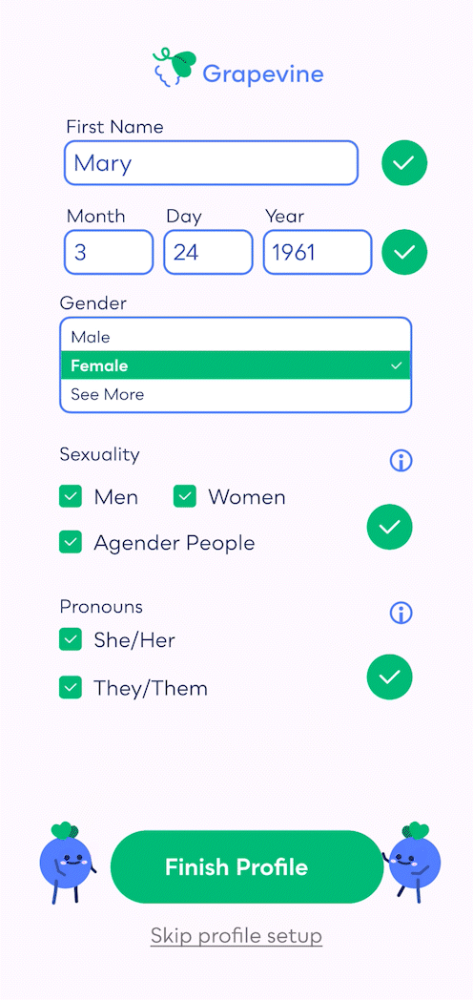
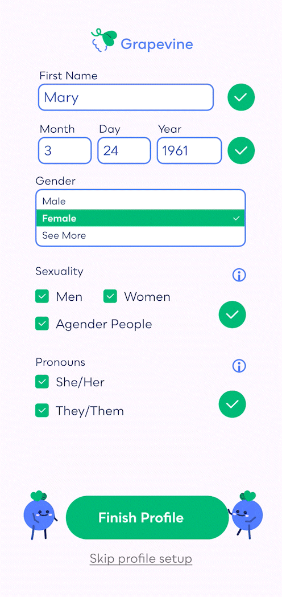

What is an onboarding sequence if not welcoming? These animations help to give a more life-like feeling to the onboarding sequence. The goal of this flow is to introduce users to Grapevine's purpose: introducing you to your future lover via events, love letters, and calls. Putting yourself out there is scary, these animations help users feel excited to use the app.


I wanted to make signing up for Grapevine as easy as possible. Through my research I found that most individuals 55 and older would find it easiest to sign up for an account via either their phone number or Facebook. This drove my decision to make those the main ways of signing up for Grapevine. After entering and verifying their number, they are asked to provide their location to make the matching process easier. All of these illustrations focus around making a connection as signing up for Grapevine is the next step in forming a connection of their own.
One of the key considerations I made while creating Grapevine is many people in my audience have a fear of technology. Not throwing their phone across the room kind of fear, more-so a fear of sharing too much information with strangers. By having the grapes, Vinny and Viney, introduce themselves, I hope that my audience feels like they're sharing their information with two harmless grapes. This introduction sequence comes right before profile set-up.

 



When both users swipe yes on each other, they're notified via a match animation. This match wraps their profile in a green loop, which in the branding symbolizes a connection. From there, users can call, send love letters, or meet.